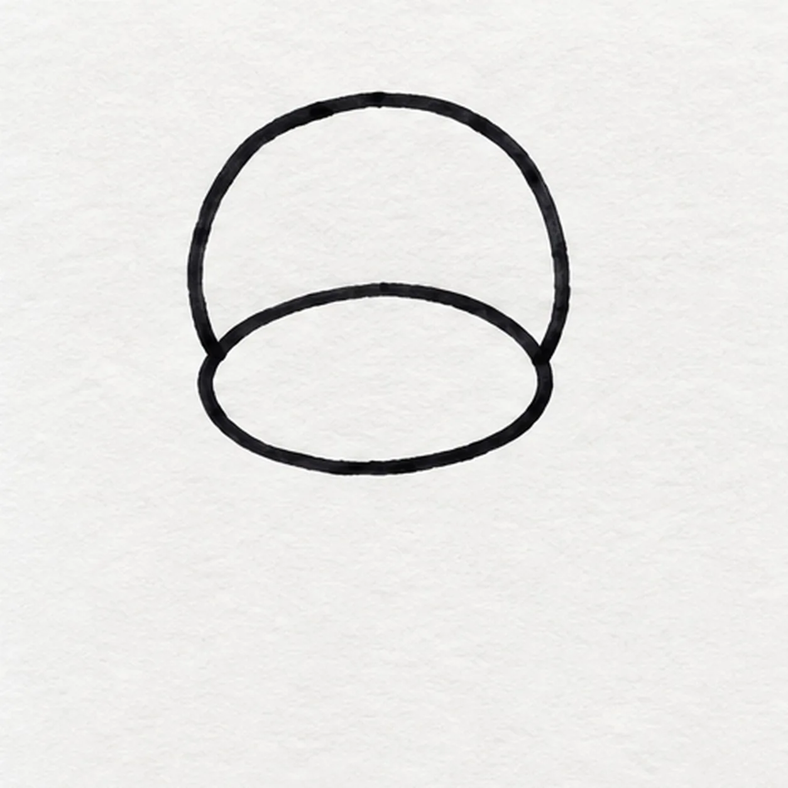
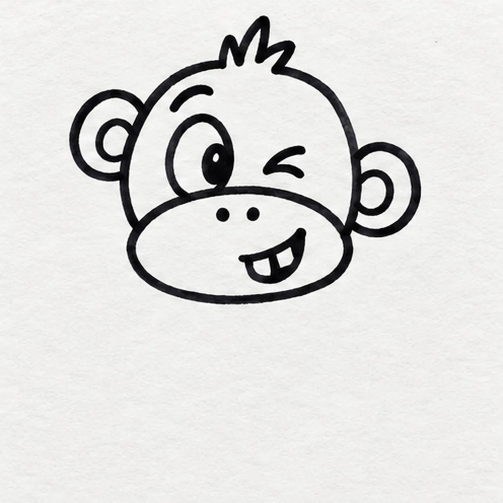
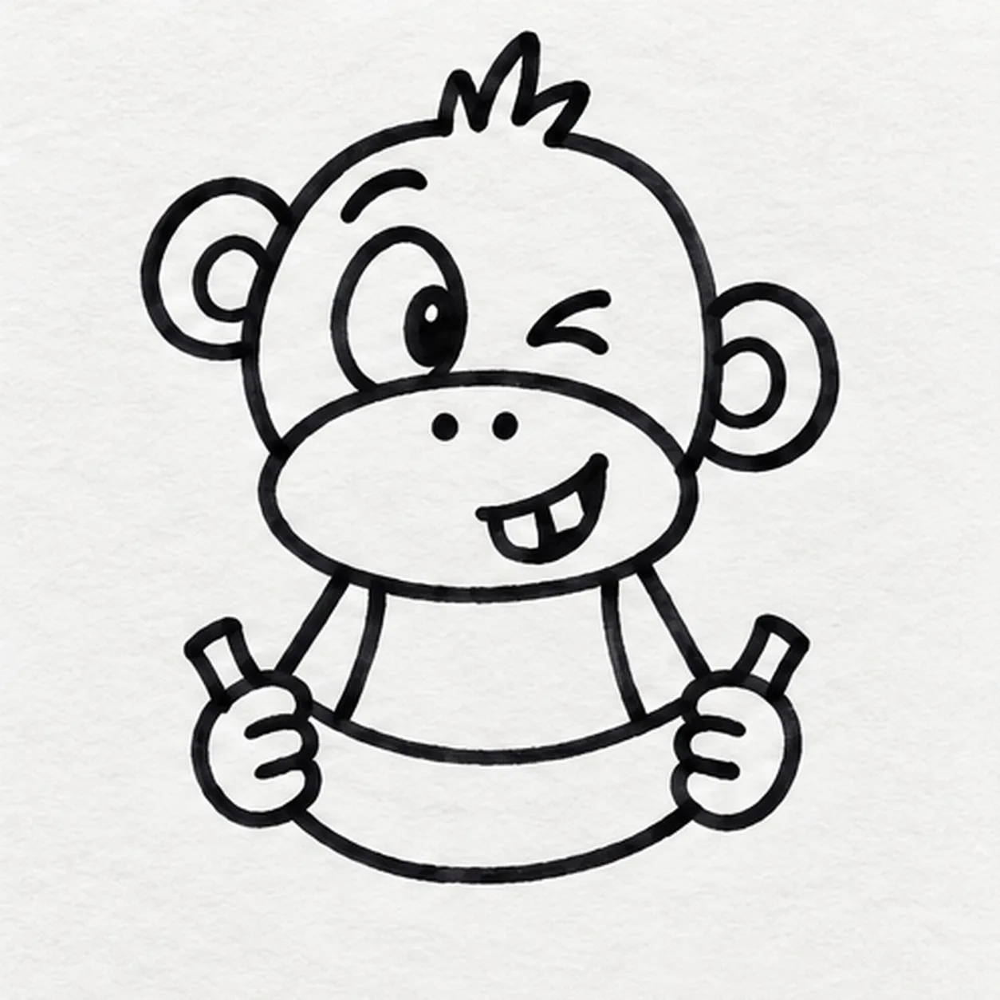
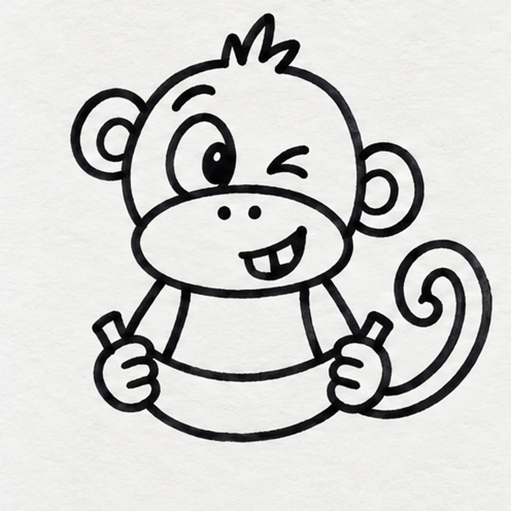
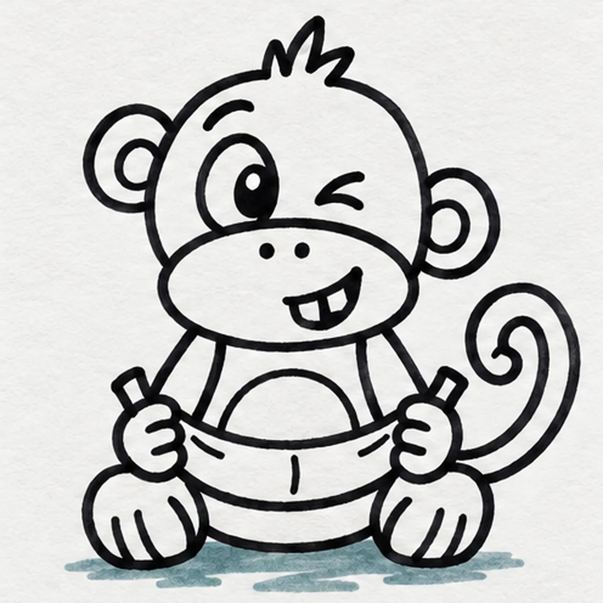

Felt-tip marker mode
Let's draw a monkey
Treat this as one playful practice round: sketch the idea loosely, simplify the shapes, then commit with confident marker outlines and bright fills.
-
01

Shape the monkey face
Draw one lopsided round head, then overlap its lower half with one smaller wide muzzle oval. Keep the top, both sides, and all paper below the head open for the ears, hair, body, and banana.
Marker tip: Pull the head in two relaxed arcs, then make the muzzle wider than it is tall. The off-center overlap leaves room for the side-eye later.
-
02

Build the cheeky expression
Attach exactly two round ears at slightly different heights and add one three-point tuft above the forehead. Draw one wide oval eye looking sideways, one narrow crescent eye, one raised eyebrow, two nostril dots, and one off-center open grin with exactly two square teeth.
Marker tip: Ink the wide eye first, aim its pupil toward the squint, then keep the grin low in the muzzle. Mismatched eyes, one brow, and two teeth prevent the default dot-eye smile.
-
03

Place the banana and hands
Below the muzzle, draw one upward-curving banana with a short stem at each end. Attach exactly two arms from beneath the head and close exactly two simple hands around the banana ends, stopping every arm line at the prop edge.
Marker tip: Ghost the banana swoop twice, then pull both long curves in confident passes. Draw the foreground fruit before the body so no keeper line needs erasing.
-
04

Wrap the torso behind the snack
From beneath the head, curve the torso sides down around the outside of both arms and join them with a low rear body curve behind the banana. From the lower rear body, sweep one long tail outward and curl its tip into one open spiral.
Marker tip: Trace the torso around the hands and banana without crossing them. Rotate the page for the tail so its single spiral stays open and easy to read.
-
05

Seat the legs and add finish marks
Attach exactly two bent seated legs beneath the torso with one simple foot each, letting them overlap the lower body edge. Curve one belly patch behind the banana, add exactly three short peel seams along the fruit, and fill one broad broken ground shadow beneath the feet with teal marker.
Marker tip: Compare the two foot shapes and keep the belly patch centered between them. Count three peel seams, then leave several paper breaks in the teal shadow.
-
06
![Handmade felt-tip marker drawing of one seated warm-brown cartoon monkey holding exactly one golden-yellow banana with orange lower edge, one wide eye with a sideways pupil and white highlight, one crescent squint eye, one raised eyebrow, exactly two nostrils, one off-center grin with exactly two square teeth, exactly two round ears, one three-point hair tuft with small paper gaps, exactly two peach hands, exactly two bent legs with peach feet, one peach belly patch, one long brown tail curled into one open spiral, exactly three banana peel seams, thick imperfect black outlines, visible marker streaks, and one broad broken teal ground shadow](../assets/cartoon-monkey-with-a-banana-finished-v1.webp)
Color the banana-break finish
Fill the established monkey warm brown, the muzzle, ear centers, belly patch, hands, and feet peach, and the one banana golden yellow with orange along its lower edge. Keep the same teal shadow and eye highlight, leave a few small paper gaps in the brown tuft and fur, and strengthen existing black contours without adding shapes.
Marker tip: Pull brown strokes with the round head and along the tail curl, then fill the banana lengthwise. Keep the two teeth, eye glint, and marker grain bright, and feel free to swap the palette on your next monkey.
![Handmade face-free felt-tip marker drawing of one front-facing teal laundry basket with exactly two oval side handles, three broad horizontal weave rows, four aligned vertical divider routes, one coral sock and one golden-yellow sock draped over the rear rim with exactly three deep-navy curved stripes each, one violet folded towel between them with one dark stitched edge, exactly two open-paper highlights on the lower basket front, thick imperfect black outlines, visible marker streaks, and one broken deep-navy ground shadow](../assets/cartoon-laundry-basket-with-striped-socks-finished-v1.webp)
![Handmade felt-tip marker drawing of one cheerful cartoon sea turtle swimming toward the upper right with one teal head and curved neck, one tiny open coral diamond mouth, one large almond side eye with a high pupil, one raised curved brow, one domed shell with a deep-navy rim and exactly five large scutes colored coral and golden yellow, exactly four attached teal flippers with dark seams and navy spots, one small pointed tail, exactly three aqua bubbles, exactly two aqua water swooshes, exactly two open-paper shell highlights, thick imperfect black outlines, and visible directional marker texture](../assets/cartoon-sea-turtle-swimming-finished-v1.webp)
![Handmade face-free felt-tip marker drawing of one left-facing coral cartoon hair dryer with one long tapered housing, one teal nozzle ring, one attached teal slanted handle, one warm-yellow round rear intake containing exactly six deep-navy radial vent slots, exactly two warm-yellow handle controls, one deep-navy power cord attached at the handle base and curling once into one two-prong plug, exactly three deep-navy airflow swooshes, exactly two open-paper housing highlights, thick imperfect black outlines, visible marker streaks, and one broad broken deep-navy ground shadow](../assets/cartoon-hair-dryer-finished-v1.webp)